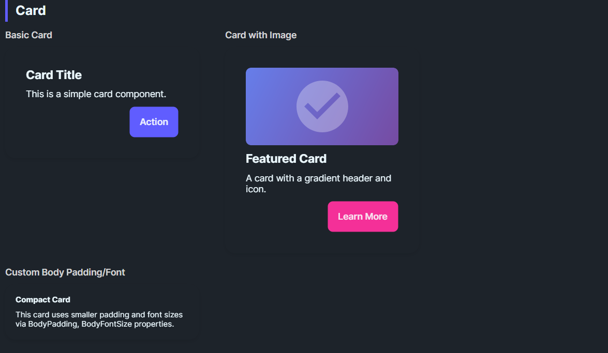

DaisyCard provides a panel for grouping content with padding, rounded corners, and optional glass effects. It supports 3 layout variants (Normal, Compact, Side), color variants for semantic styling, configurable body/title typography, and an opt-in glassmorphism stack with tint/blur controls. You can also use the built-in header API (Title/Description/Icon) for a ready-made card layout. Use it for dashboards, feature tiles, or content groupings; compose headers, bodies, and action rows inside.
| Variant | Description |
|---|---|
| Normal (default) | Standard padding (32) and 16px corner radius. |
| Compact | Reduced padding (16) for dense layouts or nested cards. |
| Side | Reserved for side-by-side card styling; currently matches Normal styling. |
Use ColorVariant to apply semantic palette colors:
| ColorVariant | Background | Foreground |
|---|---|---|
| Default | Base100 (or custom) | BaseContent (auto-detected) |
| Primary | DaisyPrimaryBrush | DaisyPrimaryContentBrush |
| Secondary | DaisySecondaryBrush | DaisySecondaryContentBrush |
| Accent | DaisyAccentBrush | DaisyAccentContentBrush |
| Neutral | DaisyNeutralBrush | DaisyNeutralContentBrush |
| Info | DaisyInfoBrush | DaisyInfoContentBrush |
| Success | DaisySuccessBrush | DaisySuccessContentBrush |
| Warning | DaisyWarningBrush | DaisyWarningContentBrush |
| Error | DaisyErrorBrush | DaisyErrorContentBrush |
| Base200 | DaisyBase200Brush | DaisyBaseContentBrush |
| Base300 | DaisyBase300Brush | DaisyBaseContentBrush |
When you set a custom Background using a Daisy palette brush, the card automatically detects the matching foreground color. No need to manually set Foreground on child elements!
<!-- Auto-foreground detection - Foreground is automatically set to DaisyPrimaryContentBrush -->
<controls:DaisyCard Background="{DynamicResource DaisyPrimaryBrush}">
<TextBlock Text="Hello World"/> <!-- Inherits correct foreground automatically -->
</controls:DaisyCard>
<!-- Equivalent to (but more concise): -->
<controls:DaisyCard ColorVariant="Primary">
<TextBlock Text="Hello World"/>
</controls:DaisyCard>This feature:
Foreground settings if you need to overrideDaisyPatternedCard renders its pattern using the card Foreground when PatternMode="Tiled". In SvgAsset mode, the pattern assets are chosen as black or white based on the active theme. If patterns disappear on some themes, use one of these approaches:
PatternMode="Tiled" and provide a high-contrast Foreground so the pattern tint stays visible.DaisyCardBackground and DaisyCardForeground in the card's Resources (keeps the sample or one instance theme-independent).SvgAsset mode and ensure the card background contrasts with the theme's black/white assets.TextBlock style or explicit Foreground in the card content.<controls:DaisyPatternedCard Pattern="Grid" PatternMode="Tiled" Foreground="White" Background="Black">
<TextBlock Text="Fixed colors, theme-independent pattern." />
</controls:DaisyPatternedCard>| Property | Description |
|---|---|
IsGlass |
Switches to the layered glass template (tinted + gradients + inner shine). Disables the drop shadow. |
GlassBlur |
Blur intensity for the frosted look (default 40). |
GlassOpacity |
Opacity of the base tint layer (default 0.3). |
GlassTint / GlassTintOpacity |
Tint color and its opacity (defaults: White, 0.5). |
GlassBorderOpacity |
Alpha for the outer border (default 0.2). |
EnableBackdropBlur |
Enables real backdrop blur using Skia (performance intensive). |
BlurMode |
Blur rendering mode: Simulated, BitmapCapture, or SkiaSharp. |
GlassSaturation |
Saturation of blur (0.0 = grayscale, 1.0 = normal). |
| Property | Description |
|---|---|
BodyPadding |
Controls padding around content (default 32; compact sets 16). |
BodyFontSize |
Default body text size for custom layouts (default 14). |
TitleFontSize |
Default title text size for custom layouts (default 20). |
Set these properties to get a ready-made header (icon + title + description) without custom XAML. Any Content you provide renders below the description.
| Property | Description |
|---|---|
Title |
Header title text. |
Description |
Body description text. |
IconImageSource |
Icon image source for the header. |
IconBackground |
Background brush for the icon container. |
IconBorderBrush |
Border brush for the icon container. |
IconSize |
Icon container size (default 56). |
<controls:DaisyCard Title="Launch Plan"
Description="Ready to ship this release. Confirm the checklist and roll out."
IconImageSource="{x:Bind ViewModel.LaunchIcon}"
IconBackground="{ThemeResource DaisyBase200Brush}"
IconBorderBrush="{ThemeResource DaisyBase300Brush}">
<controls:DaisyButton Content="Open" Variant="Primary" HorizontalAlignment="Right" />
</controls:DaisyCard>Place any layout/content inside the card; common patterns:
<!-- Standard card -->
<controls:DaisyCard>
<StackPanel Spacing="10">
<TextBlock Text="Card Title" FontWeight="SemiBold" FontSize="18" />
<TextBlock Text="Supporting description goes here." TextWrapping="Wrap" />
<StackPanel Orientation="Horizontal" Spacing="8">
<controls:DaisyButton Content="Action" Variant="Primary" />
<controls:DaisyButton Content="Secondary" Variant="Ghost" />
</StackPanel>
</StackPanel>
</controls:DaisyCard>
<!-- Color variant card -->
<controls:DaisyCard ColorVariant="Primary">
<StackPanel Spacing="6">
<TextBlock Text="Primary Card" FontWeight="Bold" />
<TextBlock Text="Uses DaisyPrimaryBrush background with auto foreground." />
</StackPanel>
</controls:DaisyCard>
<!-- Custom background with auto-foreground -->
<controls:DaisyCard Background="{DynamicResource DaisySuccessBrush}">
<StackPanel Spacing="6">
<TextBlock Text="Success Card" FontWeight="Bold" />
<TextBlock Text="Foreground auto-detected from background!" />
</StackPanel>
</controls:DaisyCard>
<!-- Compact card -->
<controls:DaisyCard Variant="Compact">
<StackPanel Spacing="6">
<TextBlock Text="Compact Card" FontWeight="Bold" />
<TextBlock Text="Tighter padding for dense layouts." />
</StackPanel>
</controls:DaisyCard>
<!-- Glass card -->
<controls:DaisyCard IsGlass="True" Width="260">
<StackPanel Spacing="8">
<TextBlock Text="Glass Card" FontWeight="Bold" FontSize="18" />
<TextBlock Text="Subtle tint with frosted layers." TextWrapping="Wrap" />
</StackPanel>
</controls:DaisyCard>
<!-- Glass with custom tint -->
<controls:DaisyCard IsGlass="True" GlassTint="#000000" GlassOpacity="0.4" GlassTintOpacity="0.6" Width="260">
<StackPanel Spacing="8">
<TextBlock Text="Dark Glass" FontWeight="Bold" />
<TextBlock Text="Higher tint opacity for contrast." TextWrapping="Wrap" />
</StackPanel>
</controls:DaisyCard>
<!-- Real blur glass card -->
<controls:DaisyCard IsGlass="True" EnableBackdropBlur="True" BlurMode="SkiaSharp"
GlassBlur="30" GlassSaturation="0.8" Width="260">
<StackPanel Spacing="8">
<TextBlock Text="Skia Blur" FontWeight="Bold" FontSize="18" />
<TextBlock Text="Real backdrop blur effect." TextWrapping="Wrap" />
</StackPanel>
</controls:DaisyCard>ColorVariant for semantic coloring - it's the cleanest approach.Background, the card auto-detects and applies matching foreground.EnableBackdropBlur="True" with BlurMode="SkiaSharp" or BlurMode="BitmapCapture".BodyPadding for edge-to-edge media (e.g., set to 0 and pad inner content manually).Width or use layout constraints for uniform card grids.